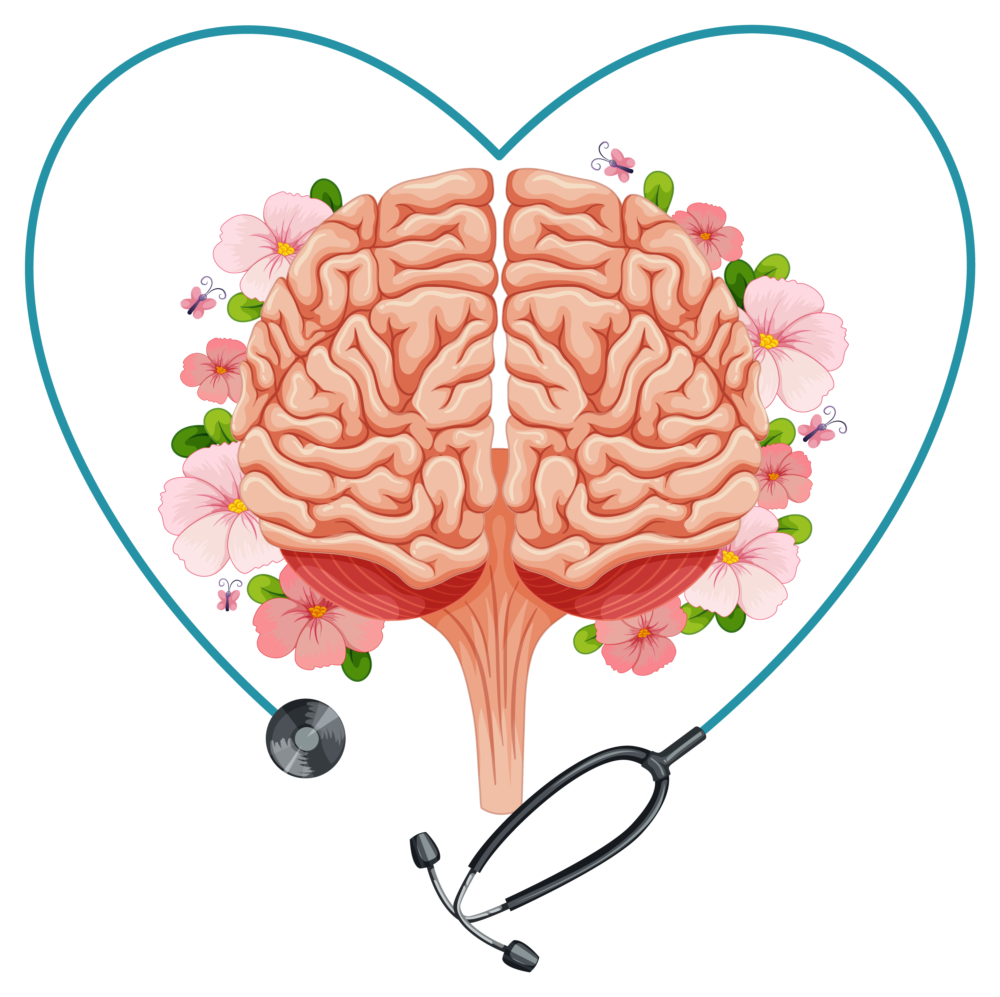

<!DOCTYPE html>
<html lang="pt-br">

</html>


<head>
    <meta charset="UTF-8">
    <title>Saúde</title>
    <title>Exemplo</title>
    <link rel="stylesheet" type="text/css"href="estilo.css" />

</head>

<body div class="container">

     <header div class="conteudo">

    <nav>

        <ul div class="botao">

            <li><a href="Início.html">Início</a></li>
            
            <li><a href="Mental.html">Sua saúde</a></li>
       
        </ul>
    
    </nav>
    
       
    <h2>O que é uma doença mental?</h2>
        
        <p> São doenças psiquiátricas que são consideradas uma condição
             de anormalidade em relação à ordem psíquica e mental, mas que também inclui um viés emocional. Nem sempre as causas desses males são claras, pois elas dependem de uma multiplicidade de fatores. <br>
             <h2>E quem está em risco de desenvolver transtornos mentais?</h2>
             Os determinantes da saúde mental e transtornos mentais incluem não apenas atributos individuais, como a capacidade de administrar os pensamentos, as emoções, os comportamentos e as interações com os outros, mas também os fatores sociais, culturais, econômicos, políticos e ambientais, como as políticas nacionais, a proteção social, padrões de vida, as condições de trabalho e o apoio comunitário.
             <br>Estresse, genética, nutrição, infecções perinatais e exposição a perigos ambientais também são fatores que contribuem para o desenvolvimento de transtornos mentais!
        </p>

        <h2>Vamos ver alguns tipos de doença mental que existem e como podemos identificar-los</h2>

     </header>

<article >
   
   
 
    <H3>Depressão</H3>
    
    <p>A depressão é um transtorno mental comum e uma das principais causas de incapacidade em todo o mundo. Globalmente, estima-se que 300 milhões de pessoas são afetadas por essa condição. Mais mulheres sofrem de depressão que homens.
       A depressão é caracterizada por tristeza, perda de interesse ou prazer, sentimentos de culpa ou baixa autoestima, sono e apetite alterados, cansaço e falta de concentração. Quem sofre com essa condição pode também ter múltiplas queixas físicas sem nenhuma causa aparente. A depressão pode ser de longa duração ou recorrente, prejudicando substancialmente a capacidade das pessoas de serem funcionais no trabalho ou na escola, 
       assim como a capacidade de lidar com a vida diária. Em seu estado mais grave,
         a depressão pode levar ao suicídio.</p>
        
         <p>E o tratamento da depressão deve incluir aspectos psicossociais, como a identificação de fatores de estresse, tais como problemas financeiros, dificuldades no trabalho ou abuso físico/mental, assim como identificar fontes de apoio, como familiares e amigos. A manutenção ou reativação 
            de interações e atividades sociais são importante.</p>
            
         <p>Uma das coisas mais importantes é você observar ao seu redor se existe alguém desenvolvendo tais sintomas
                para que você possa ajudá-lo e também mostrar seu apoio. </p>

                <h3>Transtorno bipolar</h3>

            <p>Esse transtorno afeta cerca de 60 milhões de pessoas em todo o mundo. Consiste tipicamente em episódios de mania e depressão,
                 separados por períodos de humor normal. Os episódios de mania envolvem humor elevado ou irritado, excesso de atividade, pressão de fala, autoestima inflada e uma menor necessidade de sono. As pessoas que têm 
                 episódios de mania, mas não experimentam episódios depressivos, também são classificadas como tendo transtorno bipolar.
            <br>Estão disponíveis abordagens eficazes para o tratamento da fase aguda do transtorno bipolar e para a prevenção de novas crises. Trata-se de medicamentos que estabilizam o humor. O apoio psicossocial 
            é um componente importante na linha de tratamento.</p>
           
            <h3>Esquizofrenia</h3>

            <p>A esquizofrenia é um transtorno mental grave que 
                afeta cerca de 23 milhões de pessoas em todo o
                 mundo. Psicoses, incluindo a esquizofrenia, são
                  caracterizadas por distorções no pensamento, 
                  percepção, emoções, linguagem, consciência do
                   “eu” e comportamento. As experiências psicóticas comuns incluem alucinações (ouvir, ver ou sentir coisas que não existem) e delírios (falsas crenças ou suspeitas firmemente mantidas mesmo quando há provas que mostram o contrário). O transtorno pode tornar difícil para as pessoas 
                afetadas trabalhar ou estudar normalmente.</p>

                <p>A esquizofrenia geralmente tem início ao fim da adolescência ou no começo da vida adulta. O tratamento com medicamentos e apoio psicossocial é eficaz. Com o tratamento adequado e suporte social, as pessoas afetadas podem voltar a ter uma vida produtiva e integrada à sociedade. Ampliar o acesso a formas de assistência cotidiana, atenção domiciliar e suporte para a inserção no mercado de trabalho são medidas de apoio para que as pessoas que sofrem com transtornos mentais graves, como a esquizofrenia, atinjam os objetivos de sua reabilitação, já que enfrentam maiores 
                    dificuldades em acessar empregos ou residência.  </p>
                
                    <h3>Outras psicoses</h3>

                   <p> Transtorno delirante persistente
                    É uma esquizofrenia paranoide mais simples, sem muitas alucinações e com pouco bizarrismo. Pode durar a vida toda. <br>
                    
                    Transtornos psicóticos agudos e transitórios
                    É uma psicose aguda causada por um estressor psicossocial. É uma forma benigna. <br>
                    
                    Transtornos esquizoafetivos
                    São combinações de esquizofrenia e distúrbios do humor. <br>
                O tratamento dessas outras psicoses é semelhante ao da esquizofrenia, mas com melhor prognóstico, especialmente quando há poucos sintomas negativos.</p>
                
        
                    <h3>Demência</h3>

                    <p>Em todo o mundo, cerca de 50 milhões de pessoas têm demência. A condição é geralmente de natureza crônica ou progressiva, na qual há deterioração da função cognitiva (isto é, a capacidade de processar o pensamento) para além do que se poderia esperar no envelhecimento normal. Ela afeta memória, pensamento, orientação, compreensão, cálculo, capacidade de aprendizagem, linguagem e julgamento. O comprometimento da função cognitiva é comumente acompanhado, e ocasionalmente precedido, pela deterioração do controle emocional, comportamento social ou motivação.

                        A demência é causada por uma variedade de doenças e lesões que afetam o cérebro, como o Alzheimer ou acidente vascular cerebral.
                        
                        Embora não haja atualmente tratamento disponível para curar a demência ou para alterar seu curso progressivo, muitos tratamentos estão em vários estágios de ensaios clínicos. Muito pode ser feito, no entanto, para apoiar e melhorar as vidas das pessoas
                         com demência, seus cuidadores e famílias.</p>
        
                         <h3>Distúrbios de desenvolvimento, incluindo o autismo</h3>

                         <p>O termo transtorno de desenvolvimento abrange deficiência intelectual e transtornos invasivos de desenvolvimento, incluindo o autismo. Os distúrbios de desenvolvimento geralmente têm início na infância, mas tendem a persistir na idade adulta, causando comprometimento ou atraso nas funções relacionadas à maturação do sistema nervoso central. Eles geralmente seguem um curso constante, em vez de os períodos de alternância entre estabilizações e crises que caracterizam muitos outros transtornos mentais.

                         A deficiência intelectual é caracterizada pela diminuição de habilidades em várias áreas de desenvolvimento, como o funcionamento cognitivo e o comportamento adaptativo. Essa condição diminui a capacidade de adaptação às exigências diárias da vida.
                         
                         Os sintomas de transtornos invasivos de desenvolvimento, como o autismo, são comportamento social, comunicação e linguagem prejudicados e uma estreita faixa de interesses e atividades, que são únicas para o indivíduo e realizadas repetidamente. Os transtornos de desenvolvimento frequentemente se originam na infância ou na primeira infância. As pessoas com esses transtornos ocasionalmente possuem algum grau de deficiência intelectual.
                         
                         O envolvimento da família no cuidado de pessoas com essa condição é fundamental. É importante conhecer as situações e atividades que causam tensão e bem-estar ao indivíduo, assim como descobrir quais ambientes são mais apropriados para uma melhor aprendizagem. O estabelecimento de rotinas diárias (horários para alimentação, brincadeiras, contato com outras pessoas e sono) ajuda a prevenir estresse desnecessário. É essencial também que os serviços de saúde façam um acompanhamento regular de crianças e adultos com transtornos de desenvolvimento e se mantenham em contato com seus cuidadores.
                         
                         A comunidade em geral tem um papel a desempenhar no que diz respeito aos direitos e necessidades das pessoas com deficiência. </p>
                </article>

                <article>

                    <h3>Transtornos do humor</h3>

                    <p>Conceito de humor
                        É a sensação de bem-estar da pessoa, os estados de alegria e de tristeza se apresentando como dois polos entre os quais as pessoas oscilam normalmente.
                        
                        <br> Características
                        Manifestam-se por depressão ou euforia, às vezes em alternância.
                        Pode haver sintomas psicóticos, quando há distorção da realidade.
                        Tipos <br></p>

                        <p> Episódio maníaco: <br>
                        
                        É marcado por crises de euforia, pensamento acelerado, sono diminuído, fala prolixa, auto-estima elevada, atenção dispersa, sensação de grandiosidade, hiperexcitação, condutas irresponsáveis, busca de prazeres excessivos, hipersexualidade, promiscuidade, prodigalidade etc.
                        Em poucas palavras, é um paciente exageradamente alegre e ativo, sem autocrítica e dado a excessos de todo tipo.
                        Pode se acompanhar ou não de sintomas psicóticos, caracterizando dois subtipos.
                        Existe também a hipomania, que é sintomaticamente mais leve e sem grande comprometimento social. <br>
                        
                        Episódio depressivo: <br>
                        
                        É marcado por tristeza, letargia, culpa, baixa auto-estima, ideação de ruína e risco de suicídio. Pode haver sintomas físicos (paciente poliqueixoso) e difere da depressão reativa, que surge como reação natural a perdas e infortúnios da vida.
                        Possui vários subtipos:
                        Episódio depressivo leve.
                        Episódio depressivo moderado.
                        Episódio depressivo grave com sintomas psicóticos.
                        Episódio depressivo grave sem sintomas psicóticos.
                        Transtorno afetivo bipolar <br>
                        
                        Antigamente chamado de psicose maníaco-depressiva, é a combinação das duas condições em alternância, isto é, crises de depressão e de mania (euforia) alternadas, cada uma durando alguns meses.
                        Pode haver psicose associada.
                        Pode haver hipomania em vez de mania.
                        Antidepressivos podem fazer o paciente mudar muito depressa, passando à euforia em poucos dias ou até em horas.
                        Episódios depressivos recorrentes <br>
                        
                        Os pacientes depressivos sofrem muitas recaídas, às vezes com curtos episódios de euforia.
                        O humor pode ser normal entre as crises.
                        Transtornos persistentes do humor <br>
                        
                        São marcados por sucessivas crises depressivas ou eufóricas de menor gravidade, podendo haver alternância. Existem dois subtipos:
                        Ciclotimia: é um transtorno bipolar mais leve, sem grande comprometimento social.
                        Distimia: é uma depressão leve crônica, conhecida popularmente como "mau humor".
                        São nitidamente formas crônicas, mais leves e de longa duração.<br>
                        
                        O tratamento com antidepressivos é eficaz nos casos de depressão isolada. Nos casos de mania associada, preferem-se os estabilizadores do humor como carbonato de lítio.</p>

                        Transtornos de ansiedade
                        Fobias
                        Conceito
                        
                        São medos excessivos de coisas que na realidade são inócuas.
                        
                        Tipos
                        
                        Agorafobia: medo de locais abertos e de multidões, medo de sair à rua; costuma ser sequela de síndrome do pânico.
                        Fobia social: medo de lugares ou situações de exposição pública (restaurantes, falar em público).
                        Fobia simples: extremamente variada, medo de insetos, avião, dentista, escuro etc.
                        Tratamento
                        
                        Usam-se antidepressivos, ansiolíticos e psicoterapia.
                        
                        Transtorno do pânico
                        Conceito
                        
                        É uma doença que se apresenta como crises súbitas e muito intensas de ansiedade, às vezes com estímulos do ambiente. Lembram crises cardíacas e duram de dez a vinte minutos. Pode haver sintomas residuais e agorafobia.
                        
                        Sintomas
                        
                        Medo de morrer.
                        Cardíacos e respiratórios.
                        Tonturas.
                        Formigamentos.
                        Vômitos.
                        Tremores.
                        Sudorese.
                        Sensação de frio ou calor.
                        Tratamento
                        
                        É feito com antidepressivos e ansiolíticos, além de psicoterapia e modernamente técnicas de respiração.
                        
                        Transtorno de ansiedade generalizada
                        É uma forma crônica de ansiedade, sem um objeto específico como nas fobias e sem a gravidade das crises de pânico. É, pois, uma forma intermediária e com o mesmo tratamento das demais. Requer atenção assim como as demais.
                        
                        Transtorno obsessivo-compulsivo
                        É uma doença que se caracteriza por obsessões com limpeza, ordem, perfeição, contagem, verificação, coisas místicas e supersticiosas e de colecionamento de objetos quaisquer. Também pode ser caracterizada como pensamentos intrusivos egodistonicos persistentes de natureza sexual (pedofilia, orientação sexual, zoofilia) ou de cunho violento (machucar a si ou a outras pessoas). A obsessão leva à compulsão por realizar rituais condizentes, como lavar as mãos, tomar banho de chinelo, não pegar jornais, ter nojo de pegar dinheiro e depois passar a mão nos olhos, verificar se o gás está desligado etc. O tratamento é feito com antidepressivos e psicoterapia.
                        
                        Reações ao estresse e transtornos de ajustamento
                        Conceito
                        
                        São transtornos causados por agentes estressores externos.
                        
                        Tipos
                        
                        Reação aguda ao estresse: é um estado de estresse que ocorre logo após um evento traumático e cessa em alguns dias. É chamado popularmente de "estado de choque".
                        Estresse pós-traumático: dura mais tempo e é mais grave. O paciente revive o trauma através de flashbacks e pesadelos. Sintomas: hipervigilância, sobressaltos, desassossego, desconfiança, hostilidade, esquiva fóbica, afeto embotado etc.
                        Transtornos de adaptação: reação de estresse por causa de mudanças súbitas na vida, como divórcio ou perda de emprego. São mais graves nas crianças e nos velhos, assim como em adultos com imaturidade emocional.
                        Tratamento
                        
                        Além dos medicamentos, a psicoterapia e o próprio tempo são fatores de cura.
                        
                        Transtornos dissociativos e conversivos
                        São reações a situações traumáticas com dissociação de memória, identidade, sensações ou controle dos movimentos. O paciente pode isolar no inconsciente um acontecimento do passado de modo a esquecê-lo (amnésia) ou sofrer uma paralisia sem explicação neurológica. Os sintomas são manobras inconscientes para não se tomar consciência de fatos traumáticos e das respectivas emoções, por isso se esquece parte do passado ou se projeta o sintoma no corpo.
                        
                        Antigamente esses transtornos eram chamados de histeria e foram estudados por Freud. A recuperação da consciência do fato traumático e a verbalização das emoções eliminam a dissociação ou conversão psicogênica. Contudo, é difícil o paciente aceitar que está doente.
                        
                        Transtorno somatoforme
                        É semelhante à histeria, o paciente projeta no corpo seus conflitos e se apresenta ao médico com uma variedade de queixas físicas que encobrem seu estado emocional. Sendo histeriforme, o paciente descreve suas queixas de forma dramática e exagerada ou ao contrário, de forma indiferente. É comum se associarem outros transtornos de ansiedade e depressão, assim como pode haver transtornos de personalidade. Os sintomas são tanto maiores e mais numerosos quanto mais o paciente tenha dificuldade para tomar consciência de suas emoções e verbalizá-las.
                        
                        O paciente mostra dois mecanismos psicodinâmicos:
                        
                        Ganho primário: o sintoma causa alívio porque projeta o problema no corpo.
                        Ganho secundário: o paciente consegue a atenção e os cuidados das outras pessoas.
                        Além disso, o paciente não se acha doente, culpa os outros pela consulta médica. É também extremamente sugestionável, pueril, fantasioso e teatral.
                        
                        O tratamento consiste de psicoterapia. Os medicamentos podem levar o paciente a experimentar diversos efeitos colaterais.
                        
                        Outros transtornos
                        Transtornos mistos de ansiedade e depressão.
                        Neurastenia: esgotamento, o paciente acorda como se não tivesse dormido.
                        Síndrome de Burnout: esgotamento profissional decorrente de sobrecarga no trabalho e baixa auto-estima.
                        Assédio moral: esgotamento causado por perseguição no trabalho.
                        Nesses casos, o tratamento depende da personalidade do paciente e dos agentes estressores.
                        
                        Transtornos de personalidade
                        Personalidade paranoica
                        Não suporta ser contrariado.
                        Não aceita desculpas.
                        Desconfiado, distorce os fatos.
                        Acha-se muito importante.
                        Acha que é o centro de tudo (autorreferência).
                        Combativo na defesa de seus direitos.
                        Personalidade esquizoide
                        Retraimento social.
                        Interiorização mental.
                        Vive em um mundo de fantasias.
                        Incapacidade de expressar emoções.
                        Personalidade antissocial
                        Desprezo pelos outros e pelas normas sociais.
                        Não muda com punições.
                        Facilmente agressivo, não tolera frustrações.
                        Culpa os outros.
                        Personalidade instável
                        Impulsivo.
                        Fica irritado quando censurado.
                        Tipos
                        
                        Impulsivo: descontrole emocional.
                        Borderline: perturbação da auto-imagem, não leva projetos a cabo, sensação de vazio, relações sociais instáveis e autodestrutivo.
                        Personalidade histriônica
                        Quer ser o centro das atenções.
                        Busca permanente por elogios e galanteios.
                        Teatral, exagerado.
                        Busca de parceiros simultâneos.
                        Ofende-se facilmente.
                        Sugestionável,sendo usado e levado facilmente pela opinião de outros.
                        Personalidade anancástica
                        Perfeccionista.
                        Preocupação com pormenores.
                        Obstinação, rigidez.
                        Pensamentos repetitivos.
                        Personalidade evitativa
                        Insegurança.
                        Desejo de ser aceito.
                        Sensível a críticas.
                        Medo de relacionamentos.
                        Medo de sair da rotina.
                        Personalidade dependente
                        Submisso.
                        Deixa as decisões nas mãos dos outros.
                        Importante
                        
                        Os transtornos de personalidade são difíceis de tratar, uma possível abordagem é a psicoterapia de grupo.
                        
                        Observações gerais
                        Cada uma dessas doenças pode ser simulada por condições médicas gerais (não-psiquiátricas) ou por abuso de drogas e álcool. Dessa forma, o hipotireoidismo pode causar depressão e a intoxicação por cocaína pode causar uma psicose aguda. Uma avaliação psiquiátrica deve levar em conta:
                        
                        Ansiedade.
                        Depressão.
                        Mania.
                        Psicose.
                        Transtornos de personalidade.
                        Transtornos cognitivos (como demência).
                        Condições médicas gerais.
                        Abuso de substâncias.
                        Classificação remissiva
                        Esquizofrenia
                        Paranoide
                        Hebefrênica
                        Catatônica
                        Indiferenciada
                        Residual
                        Simples
                        Depressão pós-esquizofrênica
                        Outras psicoses
                        Transtorno delirante persistente
                        Transtornos psicóticos agudos e transitórios
                        Transtornos esquizoafetivos
                        Transtornos do humor
                        Episódios depressivos
                        Episódios maníacos
                        Transtorno bipolar
                        Episódios depressivos recorrentes
                        Transtornos persistentes do humor
                        Trantornos de ansiedade
                        Fobias
                        Pânico
                        Ansiedade generalizada
                        Transtorno obsessivo-compulsivo
                        Dissociações e conversões
                        Transtorno somatoforme
                        Reações ao estresse e transtornos de ajustamento
                        Outros
                        Transtornos de personalidade
                        Paranoica
                        Esquizoide
                        Antissocial
                        Instável
                        Histriônica
                        Anancástica
                        Evitativa
                        Dependente
                        Ver também
                        Benzodiazepínico
                        Antidepressivo
                        Antipsicótico
                        Carbonato de lítio
                        Psicoterapia
                        Referências
                        Kaplan, H.I.; Sadock, B.J.; Greeb, J.A. Compêndio de Psiquiatria (7ª ed.). Porto Alegre, Artes Médicas, 1997.
                        «Classificação Internacional de Doenças»
                </article>

        <H1>O que você pode fazer ?</H1>

        <P>Preste atenção ao comportamento da pessoa, tente ver se houve alguma 
            mudança. <br>
            Sente e escute o que a pessoa tem a dizer, sem interrompê-la mesma que 
            ela fale algo que nao goste, não critique e nem tente comparar com alguém ou até 
            consigo mesmo. <br>
            Após escutar o desabafo incentive a procurar ao médico em busca de um tratamento especializado
            demonstre que você irá apoiá-lo em cada etapa. <br>
            O apoio de amigos e familiares são essências nesses momentos.
    
        </P>

        <H1>O que você não pode fazer ?</H1>

        <p> Umas das coisas que você nao pode fazer é encarar mudança de comportamento como se fosse frescura ou até
            mesmo que a pessoa está querendo chamar atenção,então sente e escute por mais difícil que seja, tenha paciência
            que por mais difícil seja o que a pessoa esteja dizendo, suas palvras podem machucar,
         mas também lhe fará entender o porque de ela estar assim e só assim você saberá como ajudá-la. <br>
             Entenda suas atitudes podem salvar a vida de alguém!</p>
   
        
  
        <H5>Esse site segue os princípios éticos da resolução do CFM 1974/2011 e do código de conduta Web de medicina e saúde.
Não aconselhamos ninguém a se auto-diagnosticar ou se auto-medicar. Se você tem algum problema de saúde,
procure um médico.</H5>

<footer> <center>@Todos os direitos reservados </center></footer>
